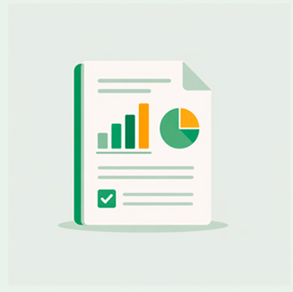
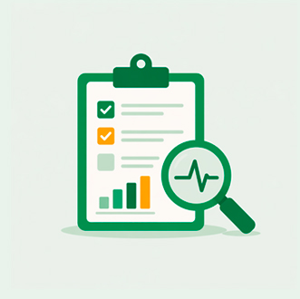

Planos Decenais
de Educação
Os Planos Decenais de Educação são instrumentos estratégicos de longo prazo, que transcendem mandatos governamentais e objetivam universalizar o ensino, bem como melhorar a qualidade da educação.
Saiba MaisFique por dentro
Acompanhe as ações e novidades do plano em todo o estado.

Relatórios
Acesse dados, indicadores e resultados das ações realizadas.

Diagnóstico
Conheça os estudos e análises que orientam o planejamento.
Arquivos
Baixe documentos, materiais técnicos e publicações oficiais.
Lives
Assista transmissões, eventos e conteúdos ao vivo.